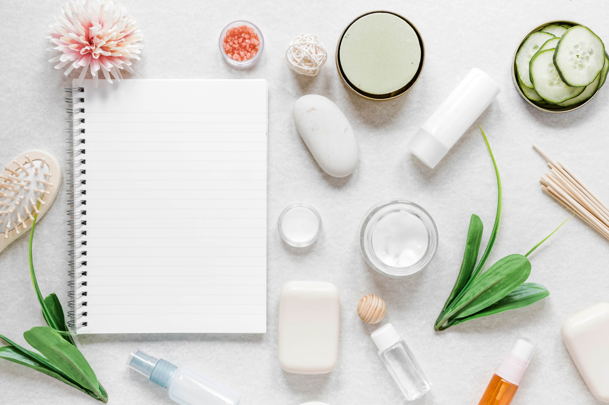
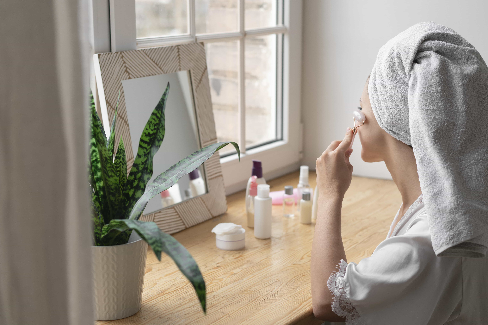

Today’s Glow Quest 🌸
Take 10 minutes to relax with your skincare — your skin will thank you!
You’re glowing at 87% today — keep nurturing 💕


Confused about skincare?
- Create AM/PM routines
- Personalized just for you!
- Extra tips